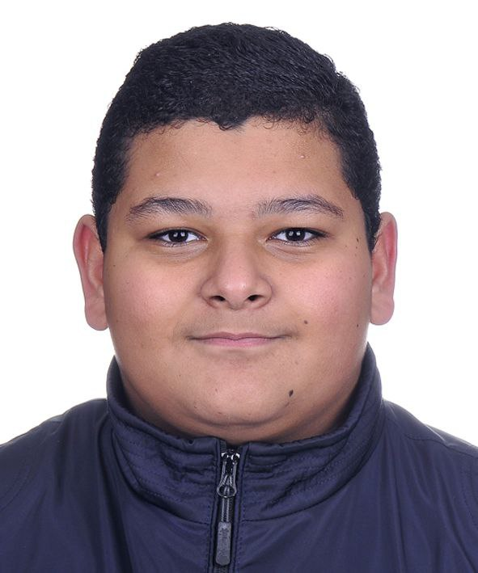

Eyad Elhefnawy
Personal data:
- Date of Birth: 4/9/2007
- Place of Birth: Kuala Lumpur - Malaysia
- Egyptian nationality.
- Address: Istanbul, Turkey
Qualification
Sports skills:
- I practiced swimming from the age of 4 to 13 years and joined the El Mokawloon Sports Club team, and participated in the Cairo Swimming Championship 2017, and the Egyptian Swimming Championship 2018, 2019.
- I practiced football, volleyball, karate, taekwondo, horse riding, fitness, tennis.
- I practiced kickboxing for six months, 2019.
- I practiced chess, and participated in the Republic Chess Championship in January 2020, and won the twelfth place.
- I practiced silat for two months, 2021.
- I am currently playing a game of table tennis.
Scientific skills:
- The Little Inventor course taught 12 levels, 2015.
- Arduino smart home, 2017 Lesson
- Photography course 2019.
- Python basics programming language course, from 6/ 2020 to 6/2021.
- MIT mobile application, 2021 course
- 2021, machine learning course
language skills :
- Arabic ⭐⭐⭐⭐⭐
- English⭐⭐⭐⭐
- German⭐
- Turkish⭐⭐
- computer skills:
Proficiency in the use of programs:
(Microsoft Windows Word, power point, excel, Internet, photo video edit, illustrator, Photoshop)- Proficiency and speed of writing on the computer in both English and Arabic
Personality building and spiritual development skills:
- Personality building courses (including: self-confidence, social communication, taking responsibility, planning and time management skills, anger management, how to express feelings) from 2012 to 2017
- He joined the Egyptian marine scouts from 2015 to 2021, and attended many scouting camps
- The Secret Teenage Club - to develop various skills and help the teenager discover his skills and traits - August 2021 until now
- Memorizing the Holy Qur'an, January 2022
Personal skills and hobbies:
- Good communication ability with others
- Diverse free readings, especially in the field of history
- photographer .
- Arabic Calligraphy
- drawing and coloring
- Cat care
- Shooting with pistol and rifle